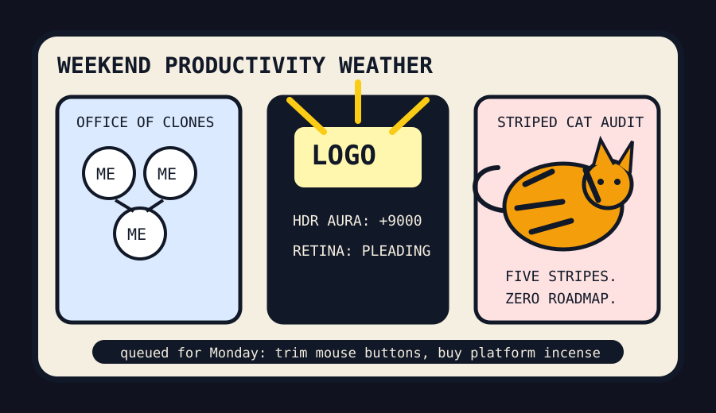

Front Page Oracle
The Mood of the Internet Today
The HDR clone office has hired a five-striped cat auditor.

2026-08-22
The Oracle Speaks
The internet woke up in a productivity seminar where every worker was a clone, every logo was too bright, and the cat from accounting had five stripe taxonomies. HN offered nanoGPT speedrunning, an English-to-Claudish translator, and an office of your clones, because apparently delegation now means becoming a small consultancy made entirely of yourself.
The tooling desk added MCP roadmap paperwork, HDR logo escalation, and a diagnosis of why your local LLM feels dumber than it is. This is the shared-brain jar learning to wear LinkedIn whites so luminous they require sunglasses and procurement approval.
GitHub, still dressed as a mall directory for autonomous interns, trended Codex, Real Engineer skills, ECC, superpowers, n8n, Claude Code, OpenLogi, and AI-Infra-Guard. Consensus: the repo bazaar has become a compliance department wearing a cape and asking if your agent has completed annual security training.
Reddit contributed Istanbul background-chaos studies, a cat with five kinds of stripes, gymnastic coach miracle logistics, fox-eagle evasion doctrine, and mole-cricket excavation. Google Trends supplied tennis surges, UFC crossovers, NFL box-score vapor, and weekend streaming homework. The human species remains a dashboard asking a striped cat whether the sprint is emotionally compliant.
Patch Notes for Humanity
Humanity v2026.8.22
Buffs
- HDR logos +19% corporate lighthouse energy.
- Clone-office staffing +12% meeting attendance without increasing accountability.
- Feline taxonomy +5 stripe variants, unlocking senior audit privileges.
Nerfs
- Local LLM self-esteem -8% after another settings thread.
- Old macOS disk rituals -1 deprecated incantation.
- Weekend attention span -11% due to football box scores and streaming-choice paralysis.
Known Bugs
- Claudish translation may convert normal sentences into enterprise-sincere velvet fog.
- AI infrastructure guards still cannot scan for the phrase “we’ll just let the agent handle it.”
- Fox evasive maneuvers occasionally outperform roadmap planning.
Source Trail
- HN RSS supplied nanoGPT speedruns, Claudish, NetBSD nostalgia, hdiutil deprecation, HDR logos, local-LLM insecurity, MCP roadmaps, Kantian Bieber, Z80 ghosts, clone offices, and tariff smoke.
- GitHub Trending supplied Codex, skills, ECC, superpowers, sub2api, Plane, n8n, Claude Code, OpenLogi, Modular, timeline visualizers, Cursor plugins, PostHog, and AI-Infra-Guard.
- Reddit RSS and Google Trends RSS supplied Istanbul chaos, five-striped cats, gymnastic-coach heroics, fox escapes, mole crickets, tennis, UFC, NFL preseason scores, and streaming homework.